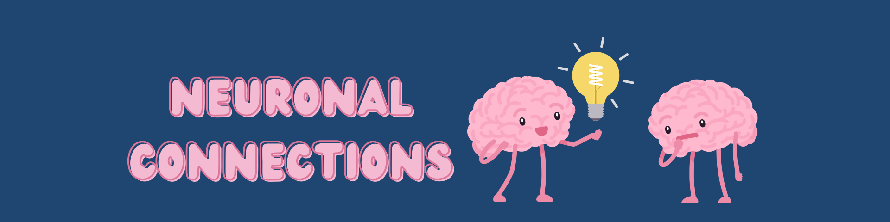
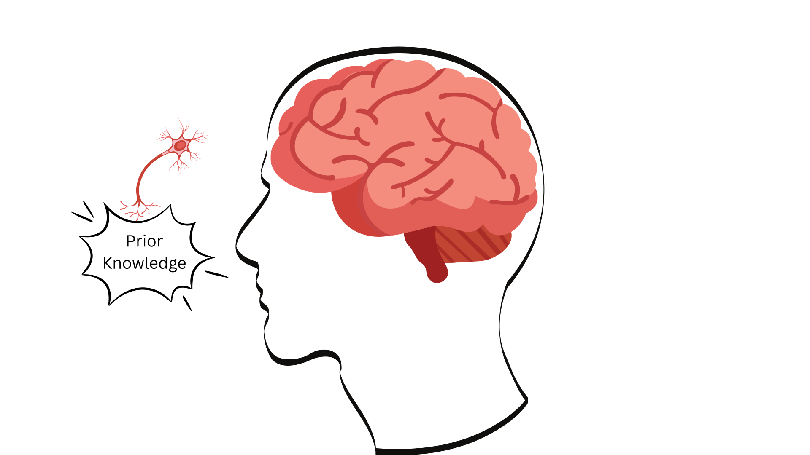
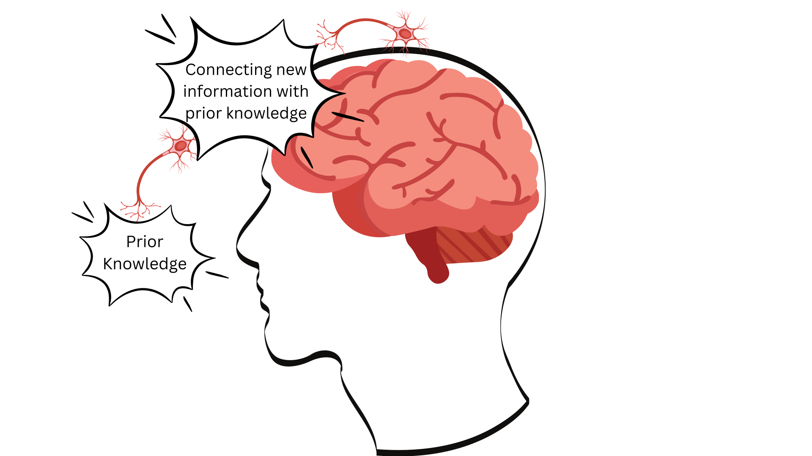
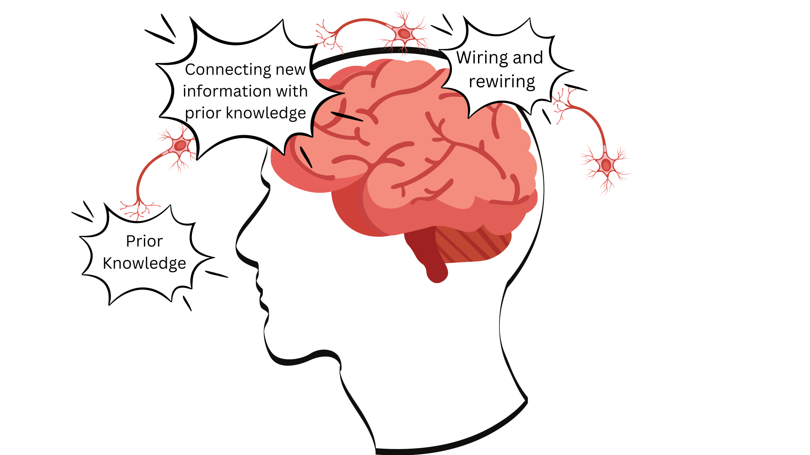
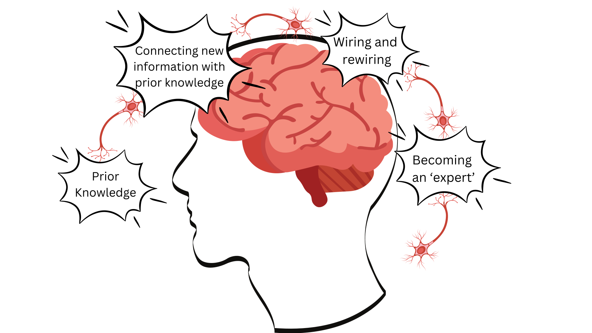
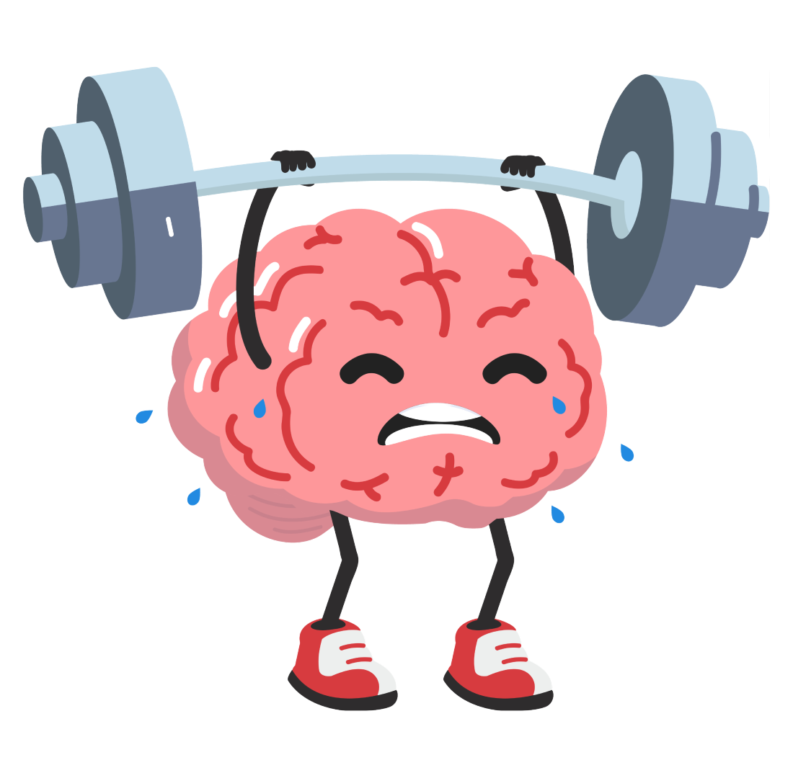
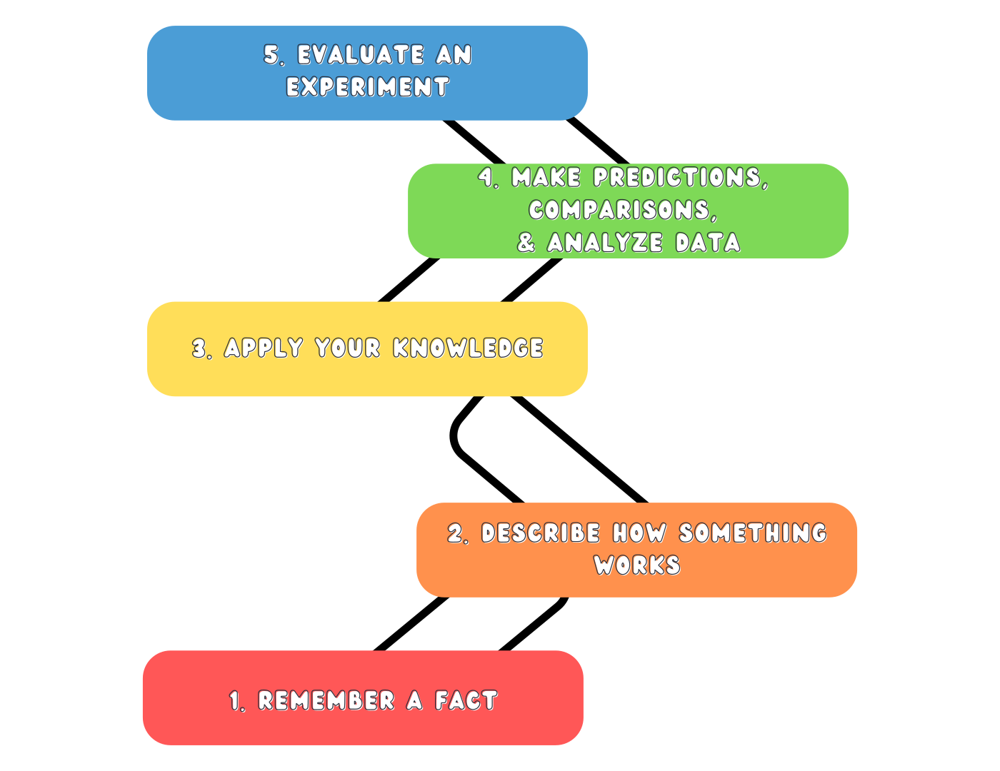

Prior knowledge
Each of us has unique neuronal connections shaped by our past experiences. Because of our prior knowledge, even when we are exposed to the same new information, we will each build and strengthen our neuronal connections differently.
Connecting new information with prior knowledge
New information can either align with our existing knowledge, making it easy to connect the dots, or it can challenge what we already know, prompting us to reconsider our prior understanding.


Wiring and rewiring
Your neuronal map (all the synaptic connections that make up your brain) is dynamic. With every learning experience you have, you not only expand your understanding but also physically refine your synaptic connections.
Becoming an “expert”
An expert has a deep and interconnected conceptual understanding of a topic or skill, which makes it easier for them to learn and integrate new concepts into their frameworks.

According to Malcolm Gladwell7, it takes 10,000 hours of practice to become an expert! If you spend 2 hours a day, 6 days a week for 15 weeks (the length of most semester-long courses), you will accumulate 180 hours of learning. So, realistically, you are not going to become an expert on any one topic during one course. However, you can learn how to be a more effective learner.
One way of thinking about developing expertise is that you are building a “tree of knowledge.”
In this tree of knowledge, you connect and organize information, making it easier to recall and
apply that knowledge to new problems.
In this module, we present a cycle of learning behaviors that will help strengthen your ability
to think, learn, and develop expertise.
Thinking about your thinking takes effort. Understanding what, why, and how you learn can empower you to learn more effectively.

Think about a topic you're confident that you know well
How do you know that you understand this topic? What makes you confident about your knowledge? One way to think about what you know is to think about the "level" of your knowledge.

Levels of Knowing
This diagram is one way of illustrating different levels of knowing, from remembering and understanding (at the bottom) to applying, then analyzing and evaluating (at the top). Each level builds on the prior level. Thus, higher levels require more time and effort (cognitive demand), as well as practice, to learn thoroughly8.
Learning something well requires effort! In the next section, we'll help you identify effective ways to learn.